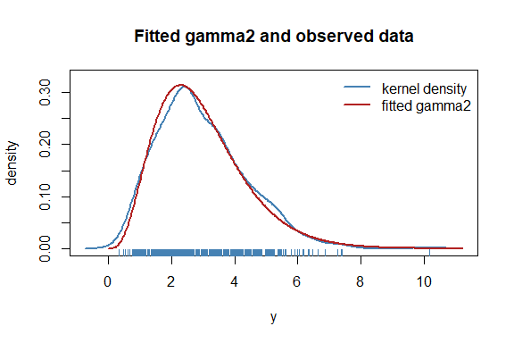
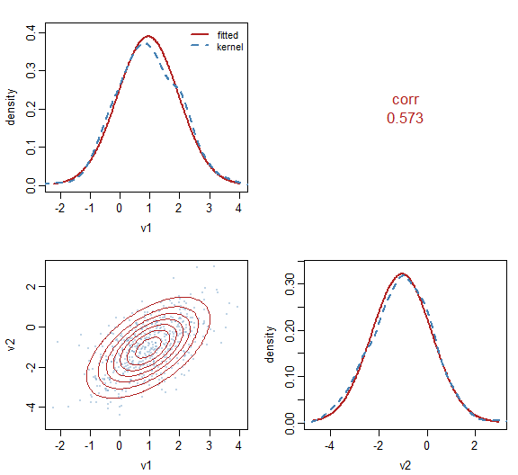

Almost every R package that fits statistical models writes its own distributions, privately: a switch on a character string, a list of closures nothing outside can reach. The same Gamma is therefore re-implemented again and again, each time only as far as that package happened to need it: the density and the score, sometimes the Hessian, rarely anything beyond.
distributions7 writes them once, as objects. Each carries the usual density, distribution and quantile functions, together with the exact derivatives of the log-likelihood up to fourth order. The derivatives are available with respect to the parameters, with respect to the response, and with respect to the unconstrained parameters behind a link function, which is the scale an optimizer works on.
It is the distribution layer of statmodels7, an S7 toolkit for statistical modeling, and works alongside linkfunctions7. The mathematics behind every formula, from the likelihood theory and the change of scale to the derivations for the zero-inflated, zero-adjusted, truncated and transformed wrappers, is worked out in the statmodels7 book.
Installation
# install.packages("pak")
pak::pak("statmodels7/distributions7")Or the whole toolkit at once, which also installs the six sibling packages:
pak::pak("statmodels7/statmodels7")The usual functions
The package carries 42 univariate distributions and 4 multivariate ones, one name per parametrization where a family has several – gaussian1_distrib() in mean and scale, gaussian2_distrib() in mean and variance, gaussian3_distrib() in mean and precision, and likewise for 12 other families. Each constructor takes the link functions used for its parameters, and parameters travel as a named list.
d <- gaussian1_distrib()
theta <- list(mu = 2, sigma = 3)
distrib_pdf(d, c(0, 2, 4), theta)
#> [1] 0.1064827 0.1329808 0.1064827
distrib_cdf(d, c(0, 2, 4), theta)
#> [1] 0.2524925 0.5000000 0.7475075
distrib_quantile(d, c(0.025, 0.5, 0.975), theta)
#> [1] -3.879892 2.000000 7.879892Derivatives
The score, the observed and expected information, and the third and fourth order derivatives are all closed form.
y <- distrib_rng(d, 5, theta)
distrib_gradient(d, y, theta)
#> $mu
#> [1] -0.20881794 0.06121444 -0.27854287 0.53176027 0.10983592
#>
#> $sigma
#> [1] -0.2025185 -0.3220917 -0.1005749 0.5149736 -0.2971415
distrib_expected_hessian(d, 0, theta)
#> $mu_mu
#> [1] -0.1111111
#>
#> $sigma_sigma
#> [1] -0.2222222
#>
#> $mu_sigma
#> [1] 0On the link scale the same generics return derivatives with respect to the unconstrained parameters instead, computed through the chain rule rather than by differentiating numerically:
distrib_gradient(d, y, theta, scale = "link")
#> $mu
#> [1] -0.20881794 0.06121444 -0.27854287 0.53176027 0.10983592
#>
#> $sigma
#> [1] -0.6075556 -0.9662751 -0.3017248 1.5449208 -0.8914246Fitting
fit_distrib() maximizes the likelihood on the link scale, where the parameters are unconstrained, then reports estimates back on their natural scale. Confidence intervals are built on the link scale and mapped through , so they can never leave a parameter’s domain.
y <- distrib_rng(gamma2_distrib(), 500, list(mu = 3, sigma2 = 2))
fit <- fit_distrib(gamma2_distrib(), y)
fit
#> Maximum-likelihood fit: gamma2
#> Observations: 500 Log-likelihood: -841.2 AIC: 1686 BIC: 1695
#> Method: Fisher scoring iterations: 17 evaluations: f 18, g 18 time: 30 ms
#> Converged: yes (gradient (max-norm) < 1e-06 or |df| < 1e-12 (relative))
#>
#> Parameter scale:
#> Estimate Std. Error 2.5% 97.5%
#> mu 2.9570 0.0631 2.8359 3.0832
#> sigma2 1.9888 0.1480 1.7188 2.3011
#>
#> Link scale:
#> Estimate Std. Error 2.5% 97.5%
#> mu 1.0842 0.0213 1.0424 1.1260
#> sigma2 0.6875 0.0744 0.5416 0.8334The fit carries the data it was estimated from, so it can be checked against the data and simulated from:
plot(fit)
sims <- simulate(fit, 100, seed = 1)
quantile(vapply(sims, median, numeric(1)), c(0.025, 0.975))
#> 2.5% 97.5%
#> 2.570081 2.881259The optimization itself is delegated to optimizers7. One argument says how to optimize, and it takes either an optimizer of that package, which brings its own stopping rule, or fisher_scoring(), which is Newton’s method with the expected information and carries how that information is to be obtained when the family has no closed form for it.
fit2 <- fit_distrib(gamma2_distrib(), y,
method = optimizers7::lbfgs(
criterion = optimizers7::crit_grad(1e-12)))
c(fisher = as.numeric(logLik(fit)), lbfgs = as.numeric(logLik(fit2)))
#> fisher lbfgs
#> -841.2326 -841.2326Where a fit starts matters more than it looks, so a family is asked for its own starting value through distrib_start(). A family with a known estimator returns it and the fit begins there; one that says nothing gets random draws.
d4 <- mvgaussian_distrib(4)
y4 <- as.matrix(iris[, 1:4])
f4 <- fit_distrib(d4, y4)
c(iterations = f4@iterations, converged = f4@converged)
#> iterations converged
#> 1 1Several dimensions
A multivariate distribution carries a mean vector and a matrix, and the matrix comes from a structure of parameters7. Its free values are scalars, so the parameter vector is a named list of numbers exactly as above and every generic here applies unchanged, fit_distrib() included. The names say which matrix the structure describes, sigma_ for a covariance and omega_ for a precision, because the same structure on the two sides is two different models.
dm <- mvgaussian_distrib(2)
dm@params
#> [1] "mu1" "mu2" "sigma_log_L1" "sigma_log_L2" "sigma_L2.1"
ym <- distrib_rng(dm, 500, list(mu1 = 1, mu2 = -1, sigma_log_L1 = 0, sigma_log_L2 = 0,
sigma_L2.1 = 0.7))
fitm <- fit_distrib(dm, ym)
mv_sigma(dm, coef(fitm))
#> v1 v2
#> v1 1.0476959 0.7273189
#> v2 0.7273189 1.5380692Those free values are coordinates an optimizer moves in, not quantities anybody reads, and they are not what the fit prints. mv_summary() carries the fit’s variance matrix onto the ones that are, by the delta method, and builds each interval on the scale that keeps it in its own set: a standard deviation on the log scale, a correlation on Fisher’s z. A precision parametrization reports the same standard deviations and correlations — they are properties of the law — and adds the conditional variances and partial correlations, which are what it describes directly.
mv_summary(fitm)
#> Estimate Std. Error 2.5% 97.5%
#> sd_v1 1.0235702 0.03236813 0.9620558 1.0890178
#> sd_v2 1.2401892 0.03921823 1.1656565 1.3194875
#> cor_v1_v2 0.5729534 0.03004043 0.5111287 0.6288798Up to three coordinates the fit can be drawn, each panel showing a marginal: the fitted density against a kernel estimate on the diagonal, and contours against the observations below it.
plot(fitm)
mvstudent_t_distrib() is the heavy-tailed alternative, with the degrees of freedom estimated alongside everything else. Its mv_sigma() is the scale matrix and its variance() the covariance, which differ by and which the family keeps apart so that it remains usable below two degrees of freedom, where the covariance does not exist.
Two families are not elliptical. dirichlet_distrib() lives on the simplex, written in a mean vector — a parameters7 simplex — and a concentration, and its marginals are beta with that same concentration. multinomial_distrib() is discrete, and being discrete it can enumerate its support: mv_support() returns every vector of counts summing to the size, so its normalization and its expected information are exact sums rather than samples.
dm <- multinomial_distrib(3, size = 5)
th <- list(probs_alr1 = 0.3, probs_alr2 = -0.2)
sum(distrib_pdf(dm, mv_support(dm, th), th))
#> [1] 1A user-defined distribution needs only its density
Everything above has a numerical fallback registered on the base classes: the distribution function by quadrature, the quantile function by root finding, the generator by Generalized Ratio-of-Uniforms, and every derivative by finite differences. So a new distribution is a subclass and one method.
MyLaplace <- S7::new_class("MyLaplace", parent = continuous_distrib)
S7::method(distrib_pdf, MyLaplace) <- function(distrib, y, theta, log = FALSE) {
ld <- -log(2 * theta$b) - abs(y - theta$mu) / theta$b
if (log) ld else exp(ld)
}
d2 <- MyLaplace(
distrib_name = "my laplace", dimension = "univariate", bounds = c(-Inf, Inf),
params = c("mu", "b"), params_interpretation = c(mu = "location", b = "scale"),
n_params = 2, params_bounds = list(mu = c(-Inf, Inf), b = c(0, Inf)),
link_params = list(
mu = linkfunctions7::identity_link(),
b = linkfunctions7::log_link()
)
)
# never implemented, yet available
distrib_cdf(d2, 1, list(mu = 0, b = 2))
#> [1] 0.6967347
distrib_gradient(d2, 1, list(mu = 0, b = 2))
#> $mu
#> [1] 0.5
#>
#> $b
#> [1] -0.25See vignette("defining-a-distribution") for the full treatment, including what to do when a parameter is not differentiable.
Validating a distribution
check_distrib() puts a distribution through thirteen numerical checks. It verifies that the density integrates to one, that the distribution function agrees with it, that the quantile function inverts it, and that the generator follows it. It also checks every derivative order against finite differences, on both scales.
invisible(check_distrib(d2, list(mu = 0, b = 2), nsim = 2e4))
#> Distribution: my laplace
#> Parameters: mu = 0, b = 2
#> Observations: 100 Monte Carlo: 20000
#>
#> [OK ] density integrates to 1 1.81e-10
#> [OK ] density is non-negative 5.00e-03
#> [OK ] cdf in [0,1] and non-decreasing 2.46e-02
#> [OK ] cdf agrees with the density 6.25e-07
#> [OK ] quantile/cdf round-trip 3.31e-10
#> [OK ] rng matches the cdf 1.68e+00
#> [OK ] gradient vs finite differences 0.00e+00
#> [OK ] hessian vs finite differences 0.00e+00
#> [OK ] deriv3 vs finite differences 0.00e+00
#> [OK ] deriv4 vs finite differences 0.00e+00
#> [OK ] expected information vs Monte Carlo 2.30e+00
#> [OK ] response derivatives vs finite differences 0.00e+00
#> [OK ] link-scale gradient vs finite differences 3.24e-09
#>
#> All 13 checks passed.What is in the box
| continuous | gaussian, cauchy, logistic, Student’s t, Laplace, pseudo-Huber, skew normal, skew t, gamma, generalized gamma, inverse gaussian, lognormal, exponential, chi-squared, Weibull, Gumbel, generalized Pareto, beta, von Mises |
| discrete | bernoulli, binomial, beta-binomial, poisson, geometric, negative binomial in both the quadratic and the linear variance parametrization |
| multivariate |
mvgaussian_distrib(), parametrized by a covariance or a precision structure from parameters7; mvstudent_t_distrib(), which keeps its scale matrix and its covariance apart so that it is usable where the second moment does not exist; dirichlet_distrib() on the simplex, whose marginals are beta; and multinomial_distrib(), whose support is enumerated by mv_support() so that every expectation is an exact sum |
| wrappers |
zero_inflated(), zero_adjusted(), truncated(), folded(), fixed(), transformation() with twelve transformers |
| tools |
fit_distrib(), check_distrib(), expectation(), moments, rng_grou()
|